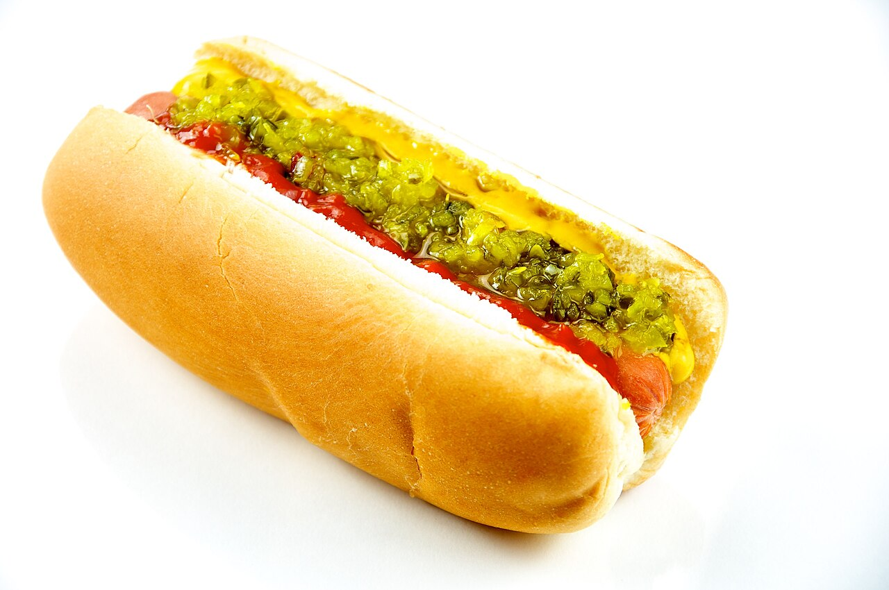
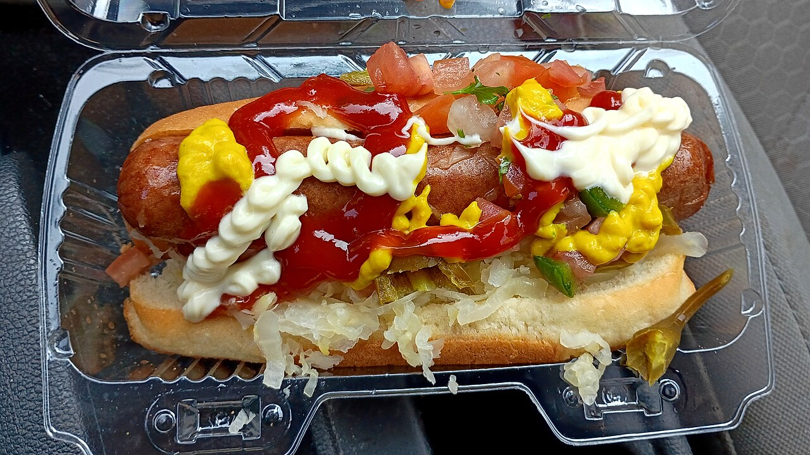
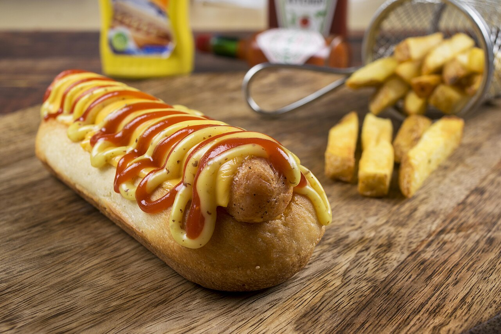

Wacked Out Weiner
The original Foley hot dog shop, built on Nathan's all-beef dogs and 40 plus toppings.
About
Wacked Out Weiner is a hot dog restaurant in Foley, Alabama, and this concept covers the original Foley store only. The menu is built on Nathan's Original all-beef hot dogs with more than 40 toppings, plus loaded nachos and combos. Seating is indoors and outdoors, and takeout is available.
Menu
Indoor and outdoor seating, plus takeout
Seating is indoors and outdoors, and takeout is available. Call (251) 971-9225 to ask about the day's offerings.
Gallery


All gallery photos are stock photos, labeled as such. They show the kind of work and setting described on this page, not this business.
Visit
Address: 215 E Laurel Ave, Foley, AL 36535
Hours: Tuesday to Saturday 11:00 AM to 3:00 PM, Sunday and Monday closed.
Phone: (251) 971-9225
Contact
Wacked Out Weiner serves Foley, AL. Questions? Call (251) 971-9225.